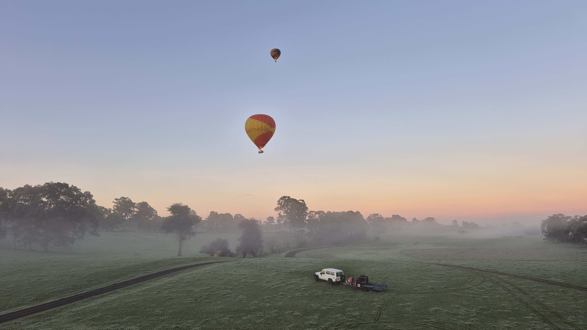
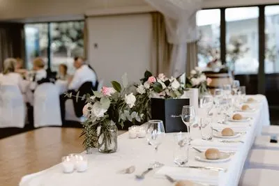
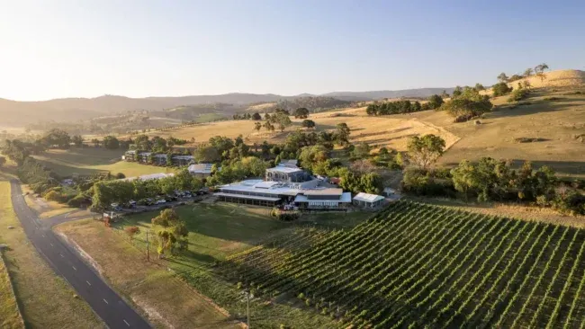

Don't worry it's not complex so no stress.

With the ceremony being held at sunrise, don't feel pressure to wake up early
(primarly because we'll be floating away in a balloon).
We will be sending a link via the
WhatsApp group, so we recommend you join
if you have not already otherwise you will not be able to see us up in the air.
If for some reason you want to get up that early (why would you do that to yourself).
You can book tickets on another balloon here
with a 10% discount with trip10.
However be aware it would be a public balloon and you will likely drift away from the bridal party, so there is no guarantee you will be able to follow us
along.

So Instead join us at Balgownie Estate, 10am for brunch were you can enjoy barista coffee (you will need it after an early morning) and an assortment of buffet breakfast food.

After 12pm we'll be on the deck for drinks to enjoy the view and enjoy the last moments of the wedding.